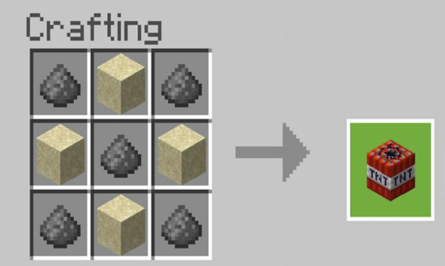

La collecte des matériaux
La collecte des matériaux est une étape très importante dans le jeu, car elle permet de construire des outils et des armes pour survivre. Il est donc important de savoir comment collecter les matériaux de manière efficace.
Le bois
Le bois est une des bases de construction de Minecraft, il sert à énormément de choses différentes, il est
donc nécessaire de savoir comment en récolter efficacement.
Étant donné l'état actuel de la nature, il est fortement déconseillé de couper des arbres ou même de les
endommager, il y a des moyens bien plus écologiques de récolter du bois.
Le recyclage est le moyen qui vous permettra de récupérer du bois sans faire pleurer dame
nature.
Pour cela, il vous suffira de sentir l'esprit écolo en vous qui vous guidera vers votre prochaine
destination.
Une fois arrivé sur place, il vous suffira de creuser sous vos pieds jusqu'à trouver un Mineshaft. Une fois
dedans, il vous suffira de récupérer le bois qui compose les arceaux de sécurité. N'ayez crainte d'une
retombée de pierre, Newton n'étant pas né dans votre monde Minecraft, la gravité n'existe pas.
Les minerais
Les minerais sont peu utiles dans le jeu, puisqu'ils ne serviront pas à faire de bonnes armures ni d'outils, cependant, ils peuvent être utiles afin de décorer votre base. Les minerais sont assez rares, ils se trouvent à la surface du monde ou dans la couche de dirt.
La TNT
La sainte TNT sera votre meilleur ami, c'est pourquoi il sera très important d'en avoir un maximum.

Une TNT demande 4 blocs de sable et 5 poudres à canon pour être fabriquée.
Le sable se récolte assez facilement, il suffit d'aller à la plage la plus proche de chez vous, et de le
récolter avec un seau à sable. Note : il est déconseillé d'aller dans un désert car le manque d'eau peut
être dangereux.
Une fois le sable récolté, il vous faudra récolter la poudre à canon. Pour cela, rien de plus simple : il
vous suffira de récolter 31 lingots de fer, puis de faire 3 blocs de fer. Avec ces blocs et les 4
lingots de fer restants, faites une enclume. Une fois l'enclume obtenue, faites une tour de 273 blocs de
haut précisément, puis il vous suffira de poser l'enclume sur le côté d'une tour et d'espérer qu'un creeper
vienne et se bouffe l'enclume. Une fois le choc effectué, le creeper sera mort sur le coup et vous aurez
votre poudre à canon.
Répétez ce cycle jusqu'à avoir un stock convenable de TNT vous permettant de bien commencer l'aventure
Minecraft.